Tips
Recording life should feel natural.
Words, photos, time — that’s all you need. Here’s how to get the most out of Stillline.
01 · Create an entry
No preparation needed.
Tap + on the home page. Add a title, write a few words, or save a photo.
Start small. You don’t have to fill in everything.
Tip: No title? No problem. Every moment is worth keeping.
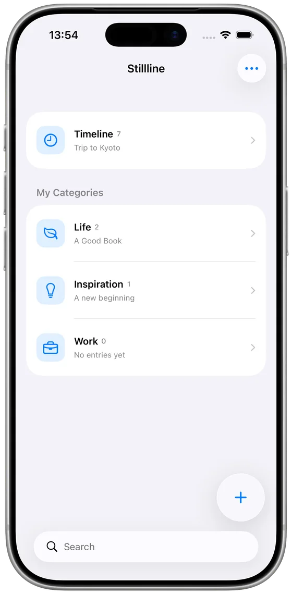
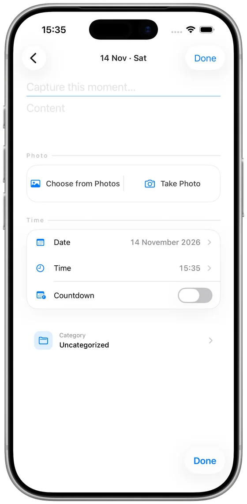
02 · Sort it your way
Make categories that fit your life.
Life, Inspiration, Work — or anything else. Tap + to add one.
Keep it simple. Sort the way that feels natural.
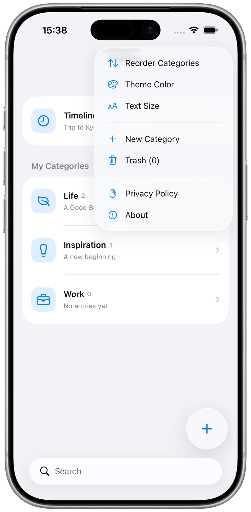
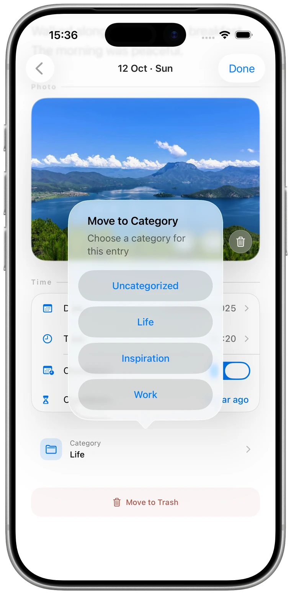
03 · Add a photo
A photo brings the moment back.
Tap to add a photo while you’re writing — or later, while you’re editing.
A snapshot from an ordinary day can become part of your timeline.
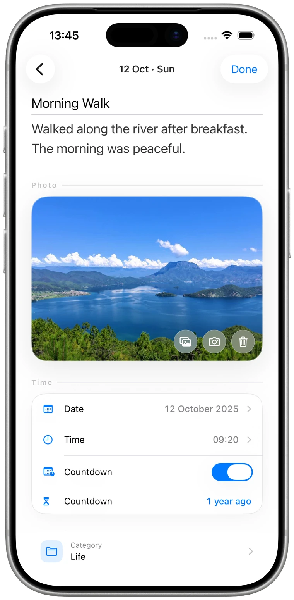
04 · Find it again
The more you record, the more you’ll want to look back.
Tap Search and type a word — a title, a phrase, a keyword.
No need to remember the date. The moment will find you.

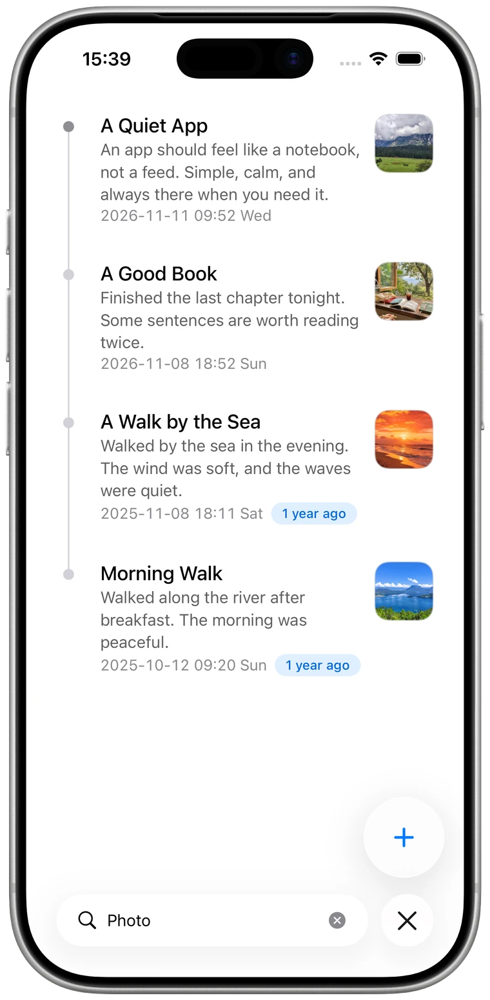
05 · Count down to what’s next
Some days are worth waiting for.
Birthdays. Trips. Anniversaries. Goals.
See how many days are left — and let the waiting become part of the story.
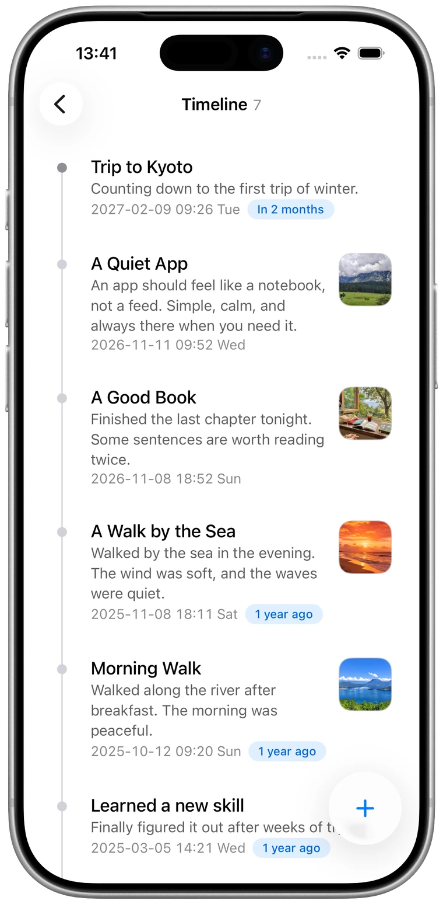
06 · Add the widget
Three actions, right on your Home Screen. Tap to create an entry, open your timeline, or take a photo — no need to open the app first.
Long press your Home Screen, tap + in the top-left corner, and add Stillline.
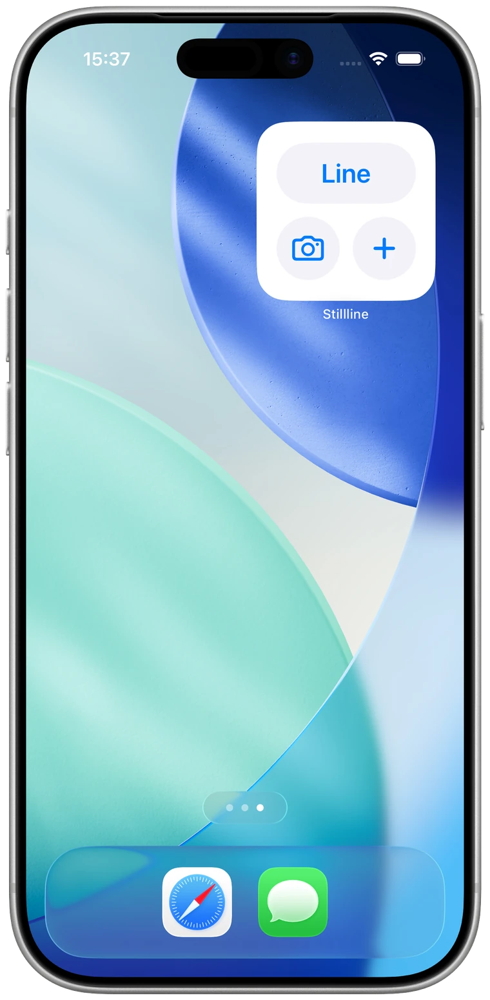
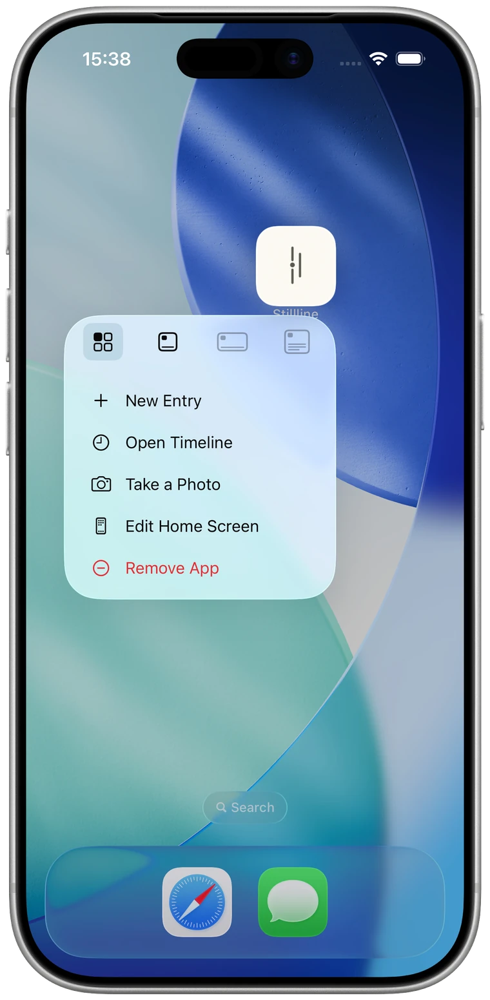
07 · Make the text your size
Stillline follows the text size you set for it in iOS. It won't change the text size in your other apps.
On your iPhone, tap Settings > Accessibility > Per-App Settings > Stillline > Larger Text, and pick the size that feels right.
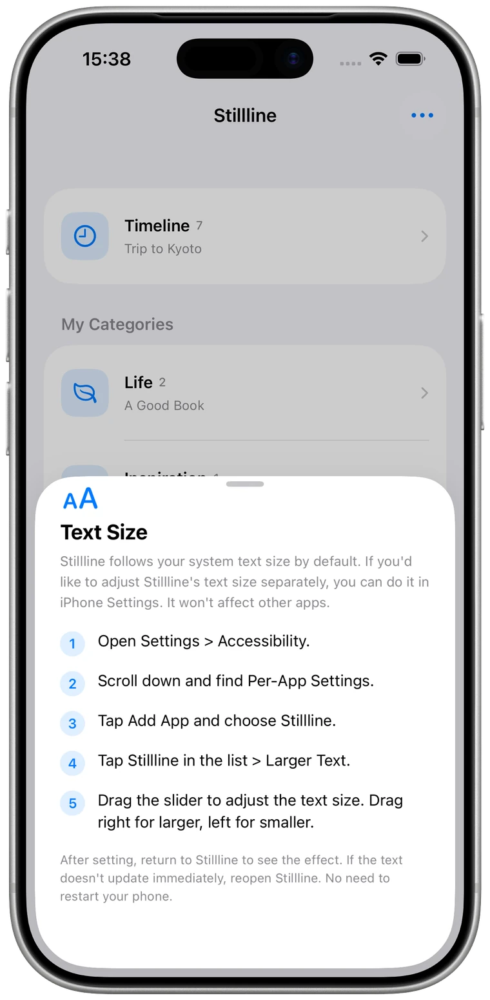
08 · Make it yours
Twenty theme colors. Pick one.
Your timeline, your color. Simple — and a little more you.
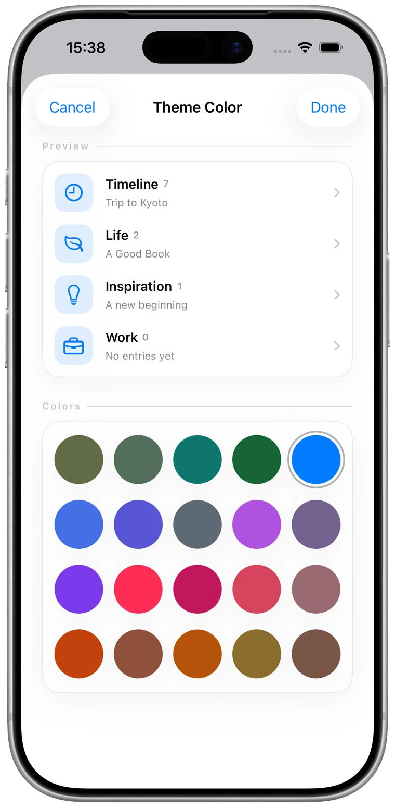
Ordinary now. Precious later.
Stillline Moments hopes to help you record life, keep memories, and see the path of time.